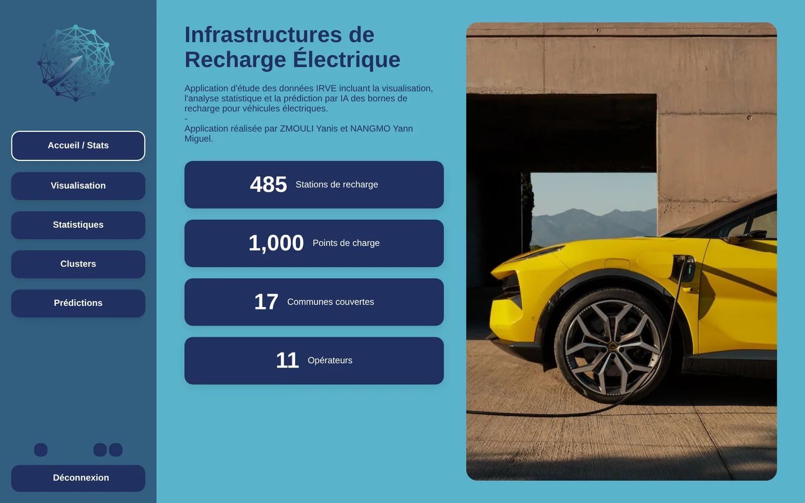
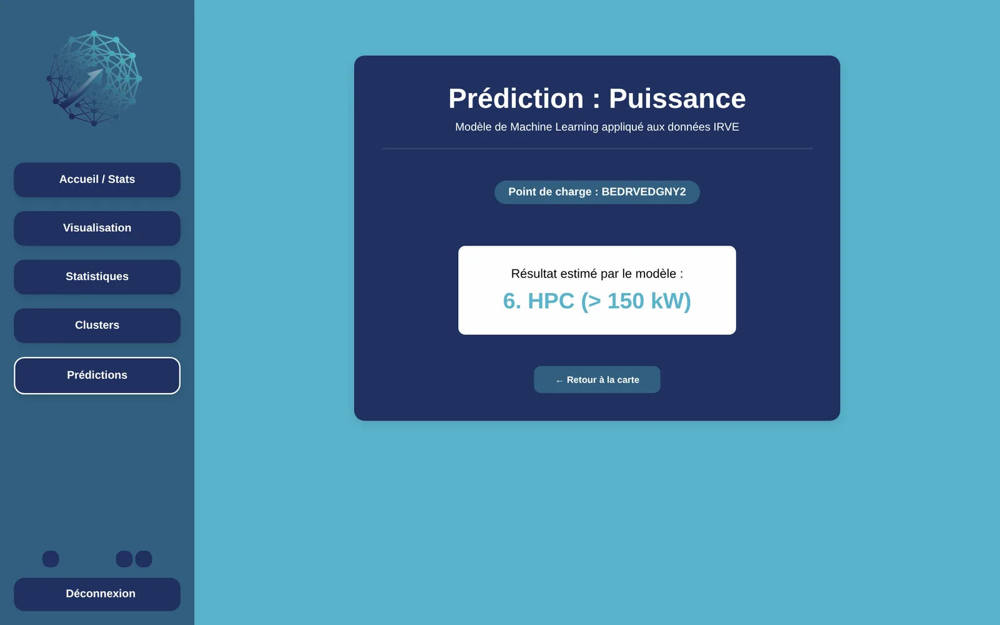

Projet phare · 06 / 2026 · Trinôme, 4 semainesFeatured · 06 / 2026 · Team of 3, 4 weeks
MaStation : les bornes de recharge de France, analysées et préditesMaStation: France's EV charging points, analysed and predicted
À partir du jeu de données national des bornes IRVE, nous avons construit toute la chaîne : nettoyage, base MySQL, clustering, modèles de prédiction et application web avec carte interactive.
Starting from France's national EV charging dataset, we built the whole pipeline: cleaning, a MySQL database, clustering, prediction models and a web app with an interactive map.


140 000
bornes de recharge analysées, dans toute la Francecharging points analysed, all across France
1 point = 1 000 bornes1 dot = 1,000 charging points
88 %
de la puissance d'une borne expliquée par le modèle, à partir de ses caractéristiquesof a charging point's power explained by the model, from its features
R² = 0,88
Pythonpandasscikit-learnMySQLPHPJavaScriptGit
Lire l'étude de cas →Read the case study →